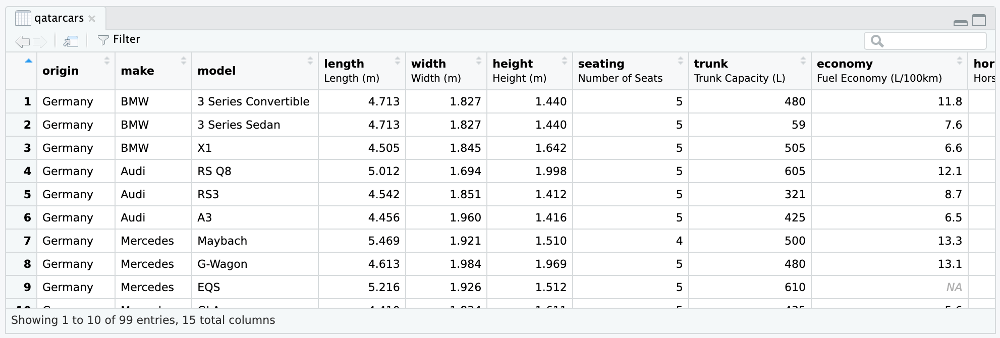
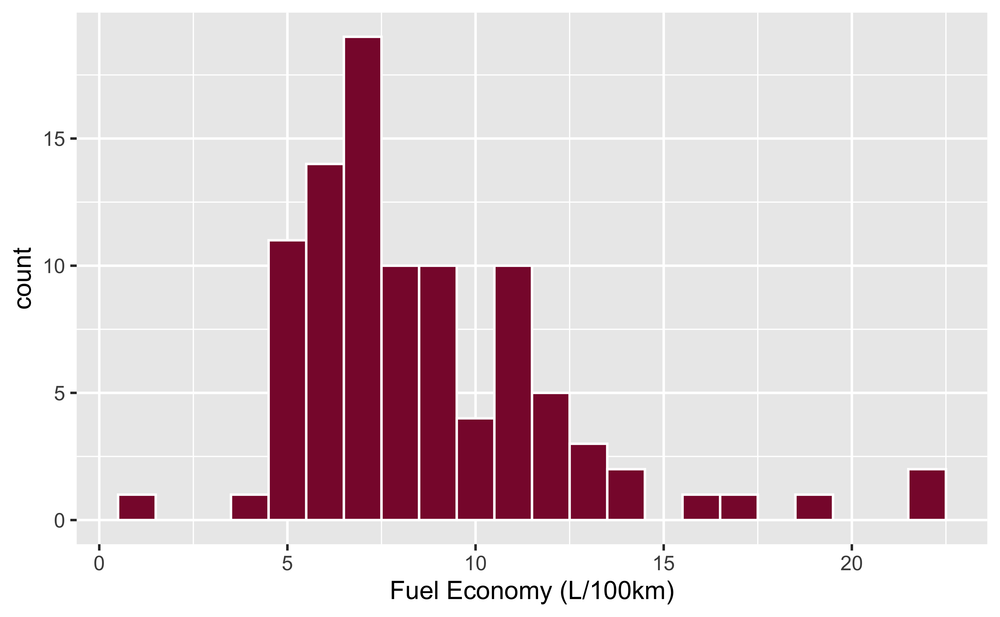
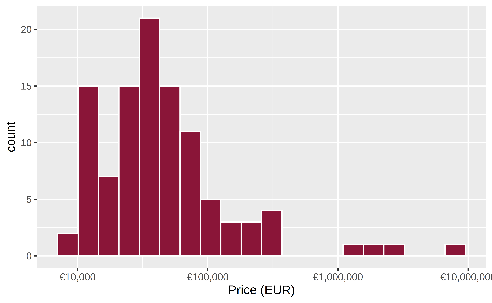
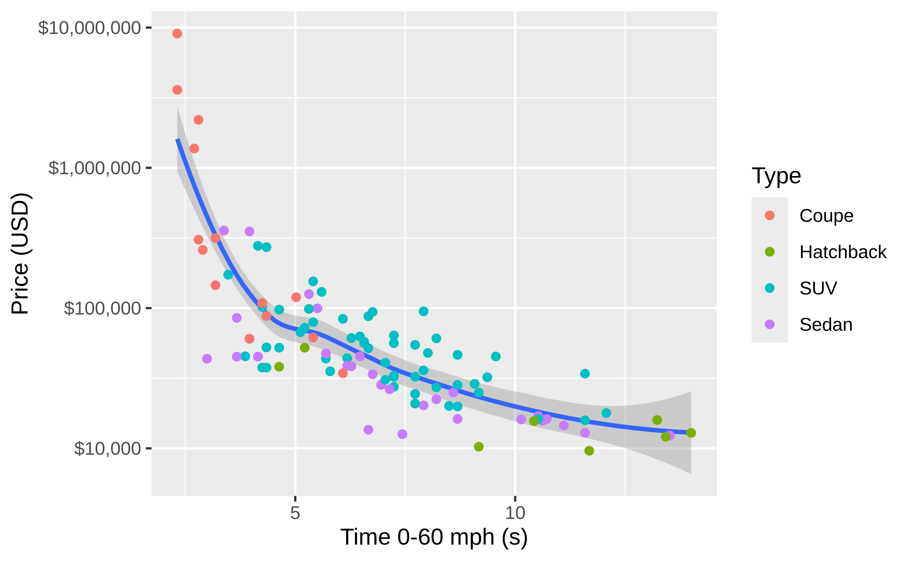

library(qatarcars)
qatarcars
#> # A tibble: 105 × 15
#> origin make model length width height seating trunk economy horsepower
#> <fct> <fct> <fct> <dbl> <dbl> <dbl> <dbl> <dbl> <dbl> <dbl>
#> 1 Germany BMW 3 Seri… 4.71 1.83 1.44 5 59 7.6 386
#> 2 Germany BMW X1 4.50 1.84 1.64 5 505 6.6 313
#> 3 Germany Audi RS Q8 5.01 1.69 2.00 5 605 12.1 600
#> 4 Germany Audi RS3 4.54 1.85 1.41 5 321 8.7 400
#> 5 Germany Audi A3 4.46 1.96 1.42 5 425 6.5 180
#> 6 Germany Mercedes Maybach 5.47 1.92 1.51 4 500 13.3 612
#> 7 Germany Mercedes G-Wagon 4.61 1.98 1.97 5 480 13.1 585
#> 8 Germany Mercedes EQS 5.22 1.93 1.51 5 610 NA 333
#> 9 Germany Mercedes GLA 4.41 1.83 1.61 5 435 5.6 163
#> 10 Germany Mercedes GLB 200 4.63 4.63 1.66 5 565 7.5 221
#> # ℹ 95 more rows
#> # ℹ 5 more variables: price <dbl>, mass <dbl>, performance <dbl>, type <fct>,
#> # enginetype <fct>
qatarcars


Overview
Qatar Cars provides a more internationally-focused, modern cars-based demonstration dataset. It mirrors many of the columns in mtcars, but uses (1) non-US-centric makes and models, (2) 2025 prices, and (3) metric measurements, making it more appropriate for use as an example dataset outside the United States. It includes almost exactly the same variables as the mtcars dataset:
-
origin: The country associated with the car brand -
makeThe brand of the car, such as Toyota or Land Rover -
modelThe specific type of car, such as Land Cruiser or Defender -
length,width, andheight: Length, width, and height of the car (in meters) -
seating: Number of seats in the car -
trunk: Capacity or volume of the trunk (in liters) -
economy: Fuel economy of the car (in liters per 100 km) -
horsepower: Car horsepower -
price: Price of the car in 2025 Qatari riyals -
mass: Mass of the car (in kg) -
performance: Time to accelerate from 0 to 100 km/h (in seconds) -
type: The type of the car, such as coupe, sedan, or SUV -
enginetype: The type of engine: electric, hybrid, or petrol
The original data was compiled by Paul Musgrave in January 2025 and is mostly sourced from YallaMotors Qatar. See Paul’s writeup of the background and purpose of the data.
See this article for a more detailed description of the rationale for and process of collecting the data:
Paul Musgrave, “Defaulting to Inclusion: Producing Sample Datasets for the Global Data Science Classroom,” Journal of Political Science Education, 2025, 1–11, https://doi.org/10.1080/15512169.2025.2572320.
Formats
The Qatar Cars data is available in several different formats:
-
This {qatarcars} R package. See below for complete details. Load like this:
Plain text CSV file. Use with any software.
-
Stata .dta file. Load like this:
use "https://qatarcars.georgetown.domains/qatarcars.dta" list in 1/6 -
R .rds file. Load like this:
-
The QatarCars Python package. Install with
pip install qatarcars, then load like this:from qatarcars import get_qatar_cars df = get_qatar_cars("pandas") # or "polars" df.head()
Installation
The released version of {qatarcars} is available on CRAN:
install.packages("qatarcars")You can also install the development version from GitHub:
# install.packages("remotes")
remotes::install_github("profmusgrave/qatarcars")Usage
Load data
Similar to other data-only R packages like {gapminder} and {palmerpenguins}, load the data by running library(qatarcars):
Tip
If you have {tibble} installed (likely as part of the tidyverse), qatarcars will load as a tibble with nicer printing output; if you do not have {tibble} installed, the data will load as a standard data frame.
See ?qatarcars for data documentation within R.
Currency conversions
Prices are stored as Qatari Riyals (QAR). At the time of data collection in January 2025, the exchange rates between QAR and US Dollars and Euros were:
- 1 USD = 3.64 QAR
- 1 EUR = 4.15 QAR
For convenience, this package includes functions for converting between these three currencies based on January 2025 exchange rates:
- From QAR:
qar_to_usd()andqar_to_eur() - From USD:
usd_to_qar()andusd_to_eur() - From EUR:
eur_to_qar()andeur_to_usd()
library(dplyr)
qatarcars |>
mutate(
price_eur = qar_to_eur(price),
price_usd = qar_to_usd(price)
) |>
select(origin, make, model, starts_with("price"))
#> # A tibble: 105 × 6
#> origin make model price price_eur price_usd
#> <fct> <fct> <fct> <dbl> <dbl> <dbl>
#> 1 Germany BMW 3 Series Sedan 164257 39580 45126.
#> 2 Germany BMW X1 264000 63614. 72527.
#> 3 Germany Audi RS Q8 630000 151807. 173077.
#> 4 Germany Audi RS3 310000 74699. 85165.
#> 5 Germany Audi A3 165000 39759. 45330.
#> 6 Germany Mercedes Maybach 1281000 308675. 351923.
#> 7 Germany Mercedes G-Wagon 1011500 243735. 277885.
#> 8 Germany Mercedes EQS 564500 136024. 155082.
#> 9 Germany Mercedes GLA 209500 50482. 57555.
#> 10 Germany Mercedes GLB 200 168997 40722. 46428.
#> # ℹ 95 more rowsUnit conversions
Conversions between SI (International System) units (i.e. meters, grams, liters) and US customary units (i.e. feet, pounds, gallons) are not included as functions. This is deliberate for pedagogical reasons. The data is designed to be universally inclusive with SI units used by the majority of the world. Users who work with US customary units can convert to them on their own.
Here’s a guide to making this conversions, since not all of the variables are straightforward:
Distance (meters ↔︎ feet)
- 1 foot = 0.3048 meters (official standard)
- 1 meter = 3.28084 feet, or \(\frac{1}{0.3048}\)
Mass (kilograms ↔︎ pounds)
- 1 pound = 0.45359237 kilograms (official standard)
- 1 kilogram = 2.204623 pounds, or \(\frac{1}{0.45359237}\)
Volume (liters ↔︎ cubic feet)
- 1 liter = 0.03531467 cubic feet
- 1 cubic foot = 28.31684 liters or \(\frac{1}{0.03531467}\)
Note: 1 liter = 0.001 cubic meters, so in cubic feet, 1 liter = = 0.03531467
Fuel economy (L/100km ↔︎ MPG)
- 1 MPG = \(\frac{235.215}{\text{L/100km}}\)
- 1 L/100km = \(\frac{235.215}{\text{MPG}}\)
Note: These are inverted! Higher MPG = lower L/100km. In SI units, low economy values are good; in US customary units, high economy values are good.
Derivation (using rounded values; exact values used in code):
- 1 US gallon = 231 cubic inches = 3.785411784 liters (official standard)
- 1 mile = 1.609344 kilometers, or
\[ \begin{aligned} \text{L/100km} &\rightarrow \text{MPG} \\ &= \frac{100 \text{ km}}{\text{L/100km}} \times \frac{1 \text{ mile}}{1.609 \text{ km}} \times \frac{3.785 \text{ L}}{1 \text{ gallon}}\\ &= \frac{100 \times 3.785}{1.609 \times \text{L/100km}} \times \frac{\text{ miles}}{\text{ gallon}} \\ &\approx \frac{235.215}{\text{L/100km}} \text{ MPG} \end{aligned} \]
Performance (0–100 km/h ↔︎ 0–60 mph)
This conversion is only approximate because 100 km/h corresponds to about 62 mph, not exactly 60 mph, and cars may not accelerate at a constant rate. For a comparable estimate, we assume constant acceleration (i.e. time is proportional to target speed).
60 mph = 96.56064 km/h (\(\frac{0.3048 \times 5280 \times 60}{1000}\)), so 60 mph is ≈96.56% of 100 km/h. Thus:
- 0–60 mph (s) = 0.9656064 × 0–100 km/h (s)
- 0–100 km/h (s) = 0–60 mph (s) / 0.9656064
economy_conversion_factor <- 100 *
3.785411784 / # liters in a gallon
(0.3048 * 5280 / 1000) # kilometers in a mile
performance_conversion_factor <- 0.3048 * 5280 * 60 / 1000 / 100
qatarcars |>
mutate(
length_ft = length / 0.3048,
economy_mpg = economy_conversion_factor / economy,
performance_mpg = performance * performance_conversion_factor
) |>
select(make, model, length, length_ft, economy, economy_mpg, performance, performance_mpg)
#> # A tibble: 105 × 8
#> make model length length_ft economy economy_mpg performance performance_mpg
#> <fct> <fct> <dbl> <dbl> <dbl> <dbl> <dbl> <dbl>
#> 1 BMW 3 Se… 4.71 15.5 7.6 30.9 4.3 4.15
#> 2 BMW X1 4.50 14.8 6.6 35.6 5.4 5.21
#> 3 Audi RS Q8 5.01 16.4 12.1 19.4 3.6 3.48
#> 4 Audi RS3 4.54 14.9 8.7 27.0 3.8 3.67
#> 5 Audi A3 4.46 14.6 6.5 36.2 6.7 6.47
#> 6 Merce… Mayb… 5.47 17.9 13.3 17.7 4.1 3.96
#> 7 Merce… G-Wa… 4.61 15.1 13.1 18.0 4.3 4.15
#> 8 Merce… EQS 5.22 17.1 NA NA 5.6 5.41
#> 9 Merce… GLA 4.41 14.5 5.6 42.0 6.8 6.57
#> 10 Merce… GLB … 4.63 15.2 7.5 31.4 9 8.69
#> # ℹ 95 more rowsAnother benefit of not including built-in conversion functions m_to_ft() is that this data can be used to teach learners how to write R functions:
m_to_ft <- function(meters) {
meters * (1 / 0.3048)
}
m_to_ft(100)
#> [1] 328.084Color
The official colors of the Qatari flag are white and Pantone 1955 C, or “Qatar maroon.” The hex representation of this color is #8A1538.
For convenience, this is included as qatar_maroon:
qatar_maroon
#> [1] "#8A1538"
scales::show_col(qatar_maroon)
Labels
Most columns in qatarcars are labeled:
attributes(qatarcars$economy)
#> $label
#> [1] "Fuel Economy (L/100km)"These labels are visible in RStudio’s Viewer panel:

If you use {ggplot2} v4.0+, these variable labels will automatically appear in plot labels:
library(ggplot2)
ggplot(qatarcars, aes(x = economy)) +
geom_histogram(binwidth = 1, fill = qatar_maroon, color = "white")
The various conversion functions also update the labels:
qatarcars |>
mutate(price_eur = qar_to_eur(price)) |>
ggplot(aes(x = price_eur)) +
geom_histogram(bins = 20, fill = qatar_maroon, color = "white") +
scale_x_log10(labels = scales::label_currency(prefix = "€"))
Examples
Fuel efficiency gets worse as cars get heavier:
ggplot(qatarcars, aes(x = mass, y = economy)) +
geom_point() +
geom_smooth(method = "lm") +
scale_x_continuous(labels = scales::label_comma())
This is reversed when looking at miles per gallon. In SI units, low economy values are good; in US customary units, high economy values are good:
economy_conversion_factor <- 100 *
3.785411784 / # liters in a gallon
(0.3048 * 5280 / 1000) # kilometers in a mile
qatarcars |>
mutate(
mass_lbs = mass / 0.45359237,
economy_mph = economy_conversion_factor / economy
) |>
ggplot(aes(x = mass_lbs, y = economy_mph)) +
geom_point() +
geom_smooth(method = "lm") +
scale_x_continuous(labels = scales::label_comma()) +
labs(x = "Mass (lbs)", y = "Fuel Economy (mpg)")
Some of these cars are really expensive, so logging the price is helpful:
ggplot(qatarcars, aes(x = performance, y = price)) +
geom_smooth() +
geom_point(aes(color = type)) +
scale_y_log10(labels = scales::label_currency(prefix = "QR "))
Or in dollars:
qatarcars |>
mutate(
price_usd = qar_to_usd(price),
performance_mph = performance * (0.3048 * 5280 * 60 / 1000 / 100)
) |>
ggplot(aes(x = performance_mph, y = price_usd)) +
geom_smooth() +
geom_point(aes(color = type)) +
scale_y_log10(labels = scales::label_currency(prefix = "$")) +
labs(x = "Time 0-60 mph (s)")